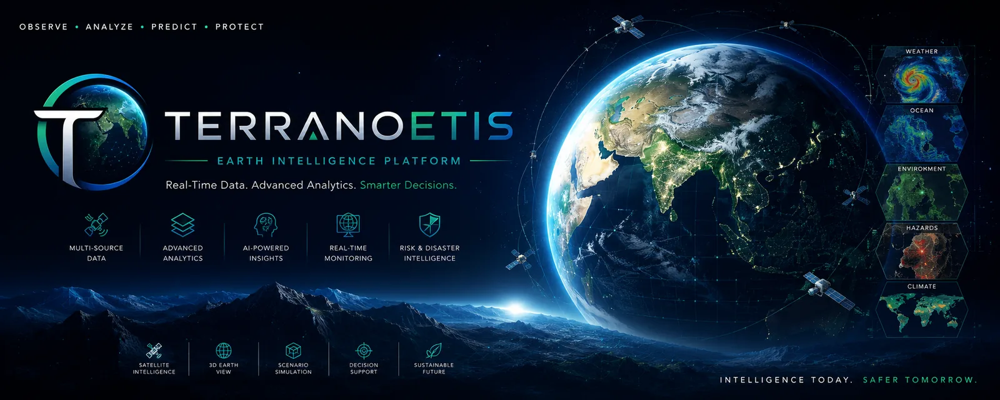
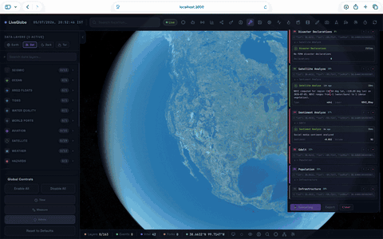
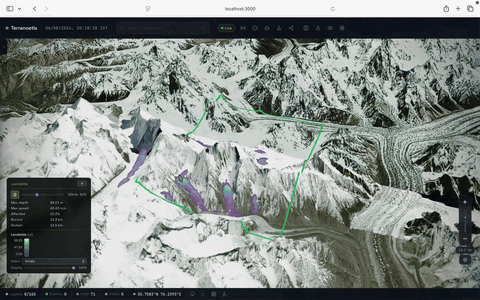

TERRANOETIS
A real-time geospatial intelligence platform for disaster research and operations: a CesiumJS globe, an Express/TypeScript API, 150 literature-cited analytical equations, seven hazard-physics simulation kernels, continuous live-data monitoring, and an AI chat pipeline with dual-process reasoning. The documentation states what the code does — with file-level citations, and measured evidence wherever it was executable.

One platform, four working layers
Client, API, computation and persistence — documented per layer with source citations. Three tiers: React 19 + Cesium client · Express 4 + TypeScript API · SQLite primary store with optional Redis acceleration.
Analytical equation engine
150 deterministic functions across 7 parts / 26 domains, each citing primary literature (80 DOI, 12 ISBN, 4 flagged NO-DOI). A never-throw contract returns honest NaN instead of invented values.
Engine details →Hazard-physics kernels
Seven NumPy kernels — GMPE shakeMaps, Voellmy debris flows, Rothermel fire spread, Holland wind + SWE surge, local-inertial flood SWE, shallow-water tsunami, lava/plume/ash volcano models. Three run locally on CPU; four execute on Kaggle kernels.
Simulation architecture →Monitoring & alerts
82 registered integrations; Sentinel polling (USGS 60 s, EONET 120 s, FIRMS 180 s, NWS 120 s) with published detection thresholds, correlation engine and reflex actions on the globe.
Data & monitoring →AI chat pipeline
Eight-intent router, System 1 / System 2 thresholds (0.92 / 0.70), 4-agent debate with critic, tool loop over live data and kernels; nine-provider model router with local GGUF fallback.
Cognition →

Seven hazards, seven cited physics pages
Every capability page carries the governing equations with their published sources, the UI → wire → kernel parameter contract, outputs with units, spatial-origin semantics, the kernel’s own validity limits verbatim, and reproduction commands — the figures below come from executing each kernel.
Earthquake
BSSA14 NGA-West2 GMPE + USGS instrumental MMI. M 7.5 test → max PGA 251.0 cm/s², 0.008 s compute, 166 ms end-to-end job.
Hurricane
Holland 1980 wind + SWE surge + waves + Lonfat rainfall + TR-55 runoff. Physics gate PASS measured; Cat 4 test: 77.0 m/s, 1.15 m surge.
Wildfire
Rothermel 1972 over Anderson-13 fuels; K_ROS calibration to the 0.105 m/s reference reproduced (0.103 → PASS).
Flood
Local-inertial SWE (LISFLOOD-FP family) with conservation gates. 300 mm event: mass closure 0.0000 %, max depth 4.01 m.
Landslide
Voellmy–Salm depth-averaged flow; μ×ξ calibration against observed runout; convergence script PASS (Δ₂ = 0.050).
Volcano
Lava SWE + Morton–Taylor plume + ash settling PDE. Benchmark suite 4/4 PASS — Kilauea 2018 runout 15.0 vs ~13.5 km.
Tsunami
HLL/minmod SWE over real GEBCO 2020. Verification found a non-flat-bathymetry instability — documented openly with repro commands.
Verification is part of the product
A documentation quality gate in CI checks links, anchors, page metadata, every file:line citation and a marketing-vocabulary ban. Claims that could not be executed in review are verified by code inspection and never presented as tested; defects found in the science are published, not buried.
Kernel self-gates
GMPE sanity, hurricane physics checks, closed-box conservation and lake-at-rest proofs abort emission on failure — each reproduced in review.
Published limitation register
Every numerical or engineering finding from the review — from solver behaviour to wire-constant artifacts — is cited and linked from its capability page.
Discrepancy log
Documentation claims are audited against the code; anything the code does not support is corrected and logged.
Reproducible numbers
Every measured figure ships with the command that produced it, so any reviewer can rerun the check on their own machine.
Run it locally in minutes
Node ≥ 20 and Python 3 are enough: no API keys are required for the analytical engine, the three local simulation kernels, or the API itself.
# 1. Clone repository & configure environment
$ git clone https://github.com/sreyassanker/Terranoetis.git
$ cd Terranoetis
$ cp .env.example .env # optional keys — features degrade gracefully
# 2. Install dependencies & boot core servers
$ npm install
$ npm run dev # Vite :3000 + Express :3001
# 3. Verify real-time kernel & API health
$ curl -s http://localhost:3001/api/healthContinue with Getting started for the measured first-run transcript, or the deployment guide for Docker, environment variables and optional Kaggle credentials.
Start with the evidence
Capability pages, parameter contracts, API reference and verification records — all cited to source.